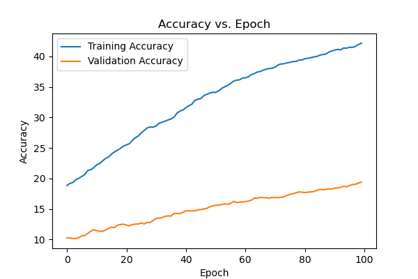
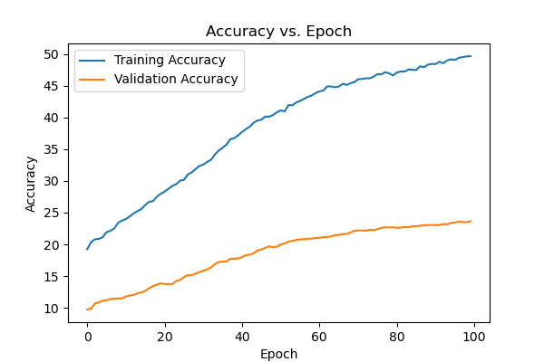

Image Recognition
I utilized python's PyTorch library to create an image recognition algorithm that classifies pictures of dogs according to 10 different breeds. I built both a convolutional and a fully connected network. For the fully connected network, I used 2 hidden layers and 4 total layers. The convolutional network also had 4 total layers with 2 hidden layers. I then trained the models on the training partition of 'DogSet', a data set of roughly 10,000 dog pictures and their corresponding breed. For the convolutional network, I used a kernel size of (5, 5) and stride (1, 1). I used a kernel size of 2 for the pooling step.
After training both a fully connected and convolutional neural network, I compared their accuracies and found that the convolutional network resulted in about a 45% accuracy as opposed to the fully connected network, which had an accuracy of about 35%.
During training, the algorithm also computed the accuracy on the training and validation partitions of the data set over every epoch (a full iteration of the data set). Below are the graphs of accuracy over each epoch for both models. As we can see, training accuracy remained higher than validation accuracy, with both increasing.
This is the plot of accuracy for a fully connected network for the dog data
set:

This is the plot of accuracy for a convolutional network:
